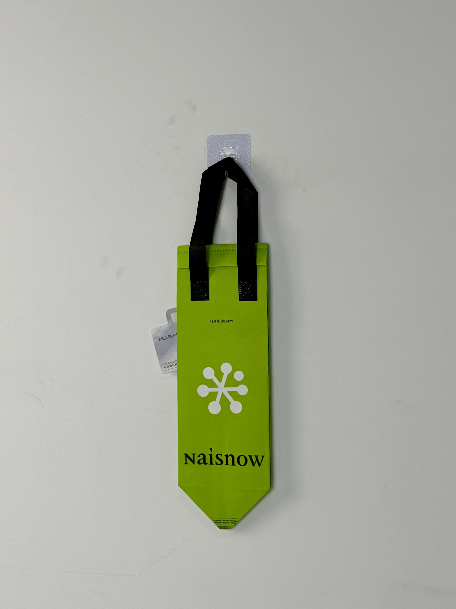

A vibrant lime-green thermal carrier for Naisnow's tea and bakery delivery service, featuring a distinctive snowflake brand mark and bold typographic branding on a vertical silhouette optimized for beverage cup transport.

Naisnow is an emerging tea and bakery brand positioned at the intersection of fresh beverages and artisanal baked goods. Operating primarily through delivery platforms and compact urban stores, the brand differentiates through a bold visual identity centered on a vivid green color palette and a distinctive snowflake-inspired brand mark. The "Tea & Bakery" dual positioning requires packaging that protects both temperature-sensitive drinks and delicate pastry products simultaneously.
Our customers don't just order tea — they order tea with a croissant, or milk tea with a cake slice. The bag needs to handle both without crushing the pastry or letting the drink go warm.
The thermal bag project addressed a specific logistics challenge: vertical beverage carriers are standard for tea delivery, but most lack the structural stability to prevent pastry items from being crushed during transport. The solution required rethinking the standard tall-silhouette format to incorporate protective features without compromising the brand's clean visual aesthetic.
The design language embraces radical simplicity: a single color field, one brand mark, and clean typography. This restraint allows the vivid lime green to function as the primary brand signal — the color is so distinctive that customers can identify a Naisnow delivery from across a crowded street. The white snowflake icon provides geometric contrast and brand memorability.
Vibrant, almost neon green creates instant brand recognition and visibility in dense urban delivery environments.
White geometric snowflake icon provides clean contrast and memorable brand symbol easily reproduced at any scale.
"Naisnow" in classic serif face communicates established quality and European bakery heritage associations.
Tall narrow form optimized for single-cup delivery while maintaining structural integrity for bakery add-ons.
The vertical carrier format presents unique engineering challenges. Tall narrow bags have higher center-of-gravity stress on handles, and the narrow base can cause tipping when set down. The Naisnow bag addresses these issues through reinforced handle stitching and a widened base gusset.
| Parameter | Specification | Test Standard |
|---|---|---|
| Cold Retention | < 12°C for 40 min (30°C ambient) | Internal Protocol |
| Load Capacity | 3 kg | ASTM D5265 |
| Handle Pull Test | > 60 N vertical | Internal Protocol |
| Seam Strength | > 25 N/cm | ASTM D1683 |
The five-stage production workflow prioritizes color accuracy and handle reinforcement. The vivid lime green is the brand's most valuable asset, and any deviation in hue would undermine recognition value.
100gsm non-woven PP with custom lime-green masterbatch. Color verified against brand standard under D65 with Delta E < 1.5.
White plastisol for snowflake mark and black plastisol for typography. Registration within ±0.5mm for clean brand reproduction.
15-micron matte BOPP preserving color vibrancy while preventing surface glare that would distort the lime tone.
3mm EPE foam laminated to aluminum-PE barrier. Heat-compression at 3.5kg/cm for uniform insulation performance.
Precision die-cutting for tall silhouette. Black handles attached with reinforced X-stitch rated for vertical load stress. Color sampling every 500 units.
The thermal bag was deployed across Naisnow's delivery operations in first-tier cities, replacing generic third-party courier bags with branded carriers. Rollout timing aligned with the brand's spring menu launch featuring new fruit-tea and pastry pairings.
Key Insight: Courier feedback revealed that the bright green bags were significantly easier to locate in crowded restaurant pickup areas, reducing order retrieval time by an average of 2 minutes per pickup. This operational efficiency translated to faster delivery times and higher customer satisfaction scores.
The vertical format proved particularly effective for protecting layered pastry items. Unlike standard wide bags where contents shift horizontally during transport, the narrow silhouette constrained movement and prevented frosting smearing or structural collapse — a quality issue that had previously generated customer complaints.
Three design decisions differentiate this tea-and-bakery carrier from standard beverage delivery bags. Each addresses the specific dual-product challenge Naisnow faces.
The vivid lime green functions as a practical navigation tool as much as a brand signal. In crowded urban food-court pickup areas where dozens of identical bags await courier collection, the distinctive color allows drivers to locate Naisnow orders instantly — reducing retrieval errors and improving delivery speed metrics.
The tall narrow silhouette naturally constrains lateral movement during transport. Bakery items placed at the bottom experience minimal shifting, while the cup holder area at top maintains beverage stability. This inherent structural logic eliminates the need for internal dividers or complex packaging inserts.
By limiting the design to a single mark, one wordmark, and a color field, Naisnow creates a brand system that scales effortlessly across packaging formats, store signage, and digital applications. The simplicity isn't aesthetic laziness — it's strategic brand architecture that ensures consistency at every touchpoint.
We design branded delivery packaging for dual-product beverage and food brands. From color-critical production to pastry-protective engineering, we deliver bags that perform as well as they look.